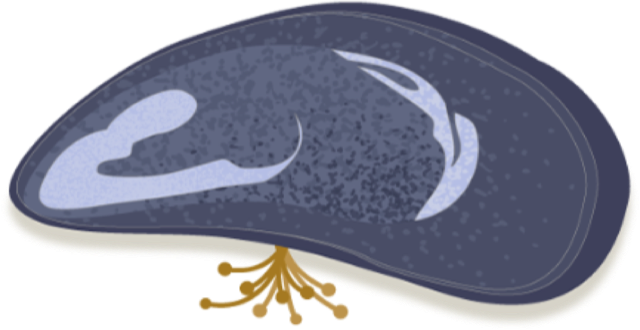
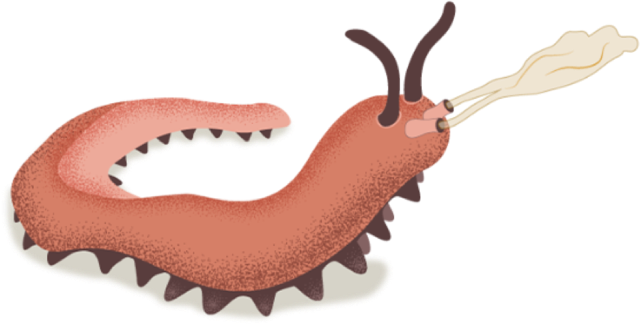

How we make fibers
Organisms store proteins, sort them, and trigger them into fibers at the right place and time. We're building each of those steps into tools, starting with encapsulated dopes.
Store
Nature holds proteins in micelles, vesicles and droplets, keeping them unreacted until they're needed.
We build encapsulated dopes, made in our custom microfluidic chips.

Sort
The droplets move into position while they're still fluid.
We're researching microfluidic sorting that sets the order of the droplets.

Trigger and align
A change in pH, shear or ions locks the proteins together, and the flow lines the chains up into a fiber.
We're researching how to trigger at the right place and time. We spin by contact pulling, electrospinning and microfluidic spinning.

More on the biology
Our bio-inspired manufacturing page goes further into how these three animals do it, and what we take from each.
Animal illustrations © Gretchen Hooker / Pixel Naturalist